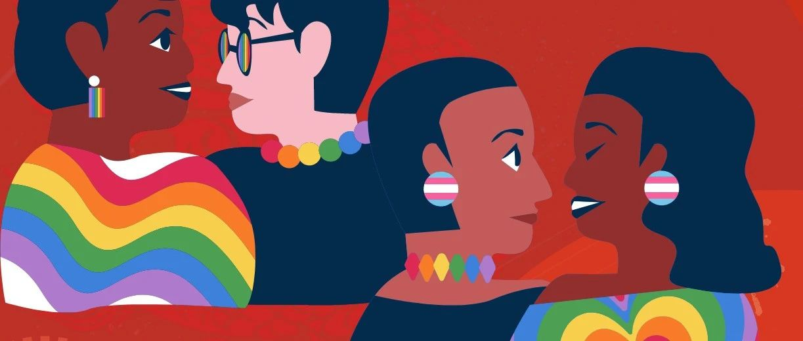

性少数春节实录投稿｜那些不可言说的,出柜,争吵,家暴…
对于大多数人而言本该充满欢乐与团圆的春节时刻，对于一些少数人而言却可能是一场别样的经历，而这样的经历甚至是痛苦、紧张、不堪的。

Ta们的性倾向、性别认同与多数人不同，Ta们就是性少数群体(注:女同性恋、男同性恋、双性恋、跨性别、性别酷儿等)。
在家庭、社会与传统保守的文化压力下，由于对于性少数群体的歧视、偏见与不了解，性少数群体在春节期间可能过的并不轻松、愉快。

当亲戚们向Ta们介绍对象、父母们对Ta们催婚、长辈们对Ta们催育，这一切Ta们将如何应对？如何表示？🌈
你又是否会出柜表明自己是同性恋者，不会结婚(异性婚姻)，不会有异性情侣？🌈
当父母亲戚知道Ta们的同性恋者/跨性别者身份，又将如何处理因此而产生的争吵甚至可能的家暴？🌈

岭南酷儿中心在此诚挚邀请性少数群体的读者们，分享你们在春节期间的真实经历，无论是幸福的瞬间，还是面临的困难，我们都愿意倾听。
我们期望通过这些真实的故事，让更多人看到性少数群体的生活现状与困境，从而推动社会的包容与理解。同时，也希望为大家提供一个相互支持和交流的温暖平台，让每一个人都能感受到关爱。

我们将在岭南酷儿中心的官方社交媒体上展示这些故事。
🌈主题🌈
《性少数春节实录》
🌈投稿🌈
约300至1000字分享推文，加岭南酷儿中心VX小助手:LGBTQ19900517
🌈截止日期🌈
2024年2月15日前
🌈参与对象🌈
性少数群体
本文编辑:邱嘉彦
参考资料:综合网络